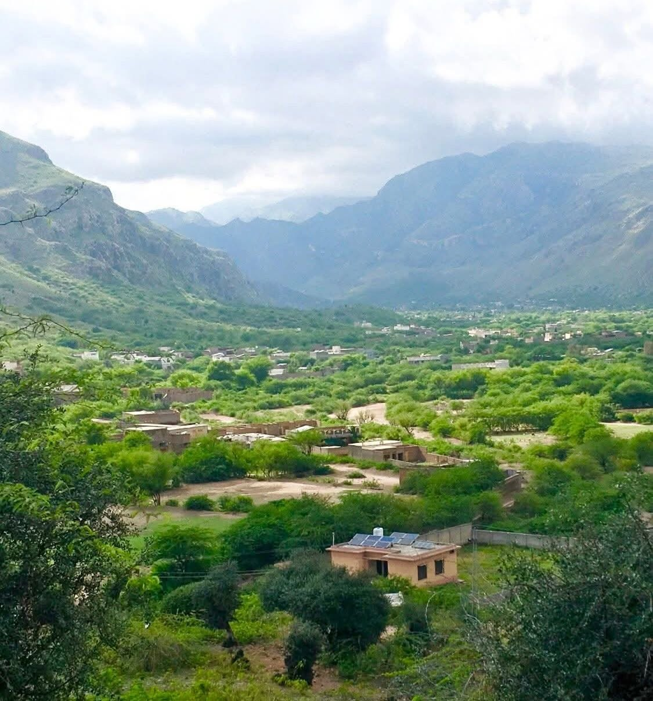

Rooted in Darra Adam Khel
We are proud to operate from a place known for its beauty, energy, and deep connection to the coal trade. Being local means we know the landscape — and respect the relationships that make business work.
Khaqan Coal Company is rooted in Darra Adam Khel, serving customers across Pakistan and preparing the next export chapter from Khyber Pakhtunkhwa.
We are proud to operate from a place known for its beauty, energy, and deep connection to the coal trade. Being local means we know the landscape — and respect the relationships that make business work.
Khaqan Coal Company carries the strength of a community behind its name — the Akkhurwal qom, first among the five tribes of Darra Adam Khel in coal supply. From our own coal mines to every contract we sign, that ownership brings responsibility: to deal fairly, to keep our word, and to create a future our people can stand behind.
Director Adnan Khan leads with a belief that a supplier should be more than a link in a chain. We want to be the dependable partner our customers can call, and a positive force in the place we call home.
Darra Adam Khel has developed through the efforts of many hardworking people. We are proud of Khaqan’s part in that story and committed to contributing to the next chapter with discipline and ambition.
Khaqan Coal Company (Private) Limited was incorporated on 03 March 2021 and is proudly owned by the Akkhurwal Qom — the house that leads Darra Adam Khel in coal supply. Led by Director Adnan Khan, the company works its own coal mines in the valley and supplies some of the country’s leading cement and industrial customers.
From its home base in Khyber Pakhtunkhwa, Khaqan has moved more than 535,000 metric tonnes of coal since its first reported year — with the next chapter aimed at export, carrying the valley’s black gold beyond Pakistan’s borders.
Our story is part of a bigger one. The Adam Khel Afridis of Darra Adam Khel stand in five tribes (qoam) — and the Akkhurwal qom, owners of the valley's leading coal operations, is the house Khaqan Coal Company calls home.
The qom at the top of coal supply in Darra Adam Khel — and ours. From Akhorwal ground, Khaqan Coal Company works its own coal mines and moves some of the most sought-after coal in the country.
One of the five tribes of the Adam Khel — kin and neighbours in the valley's coal story.
A pillar of the Adam Khel confederation, part of Darra Adam Khel's trade and craft heritage.
Part of the valley's living network of families, workshops and mine roads.
Together with the other four qoms, completing the Adam Khel of Darra Adam Khel.
Steady leadership, local perspective, and a commitment to doing business with dignity — carried by four key people, each with a different strength.
Adnan Khan is the Director who made everything digital and took Khaqan Coal Company to new heights. A forward-thinking and approachable leader, he pairs modern systems with old-fashioned values — bringing warmth, honesty and reliability to every supply relationship while helping Darra Adam Khel continue to move forward.
Under his direction, Khaqan Coal Company keeps its values close: honesty in dealing, respect for people, and pride in the place where it all began.
Haji Ilyas Khan is the person behind the vision of the company — and the quiet, wise force behind all of its success. From the earliest days he saw what Khaqan could become: a local name with the discipline, standards and relationships to supply the country's leading industries.
His leadership keeps the company grounded in its roots while its ambitions grow — mining with pride in Darra Adam Khel, treating every partner with courtesy, and preparing the next chapter beyond Pakistan's borders.
Abdur Rauf Khan is the man with the courage — the calm, resourceful problem-solver the company turns to when the ground gets tough and the schedule gets tight. He runs the day-to-day with quiet authority, untangling logistics, protecting standards, and keeping every load moving on time.
A straight talker who leads by example and treats everyone with respect, he makes sure that what Khaqan promises is exactly what Khaqan delivers — every single day.
Jibran Khan is the finance officer on whom the company relies a great deal — a meticulous, trustworthy steward of every rupee. He keeps Khaqan's numbers clear, disciplined and honest, turning the company's growth into a solid financial foundation the whole team can build on.
With an eye on every detail and a steady hand on the books, he gives Khaqan the confidence to mine deeper, move further, and grow without ever losing sight of the bottom line.
We provide high-quality coal to major cement manufacturers and industrial customers nationwide, with a focus on consistent supply, dependable logistics, and long-term business partnerships.
Our next chapter is export: extending a trusted KPK-origin supply platform beyond Pakistan with the same discipline, clarity, and local strength.
The following figures are presented as supplied by management. They show a business platform scaling from local strength toward national and export readiness.
| Financial year | Quantity supplied | Annual turnover |
|---|---|---|
| 2022–2023 | 26,282.34 MT | PKR 998,161,849 |
| 2023–2024 | 62,585.88 MT | PKR 2,361,728,842 |
| 2024–2025 | 71,770.52 MT | PKR 2,603,355,872 |
| 2025–2026 | 374,482.61 MT | PKR 15,048,213,358 |
| Overall | 535,121.35 MT | PKR 21,011,459,921 |
Management-provided performance information. Please verify the final legal presentation of historical figures against statutory financial records before publication.
Khaqan Coal Company has successfully supplied the following leading manufacturers and industrial organizations.
Consistent quality, dependable supply, professional service, and partnerships built to last.
Mining, movement, and the relationships around them are part of the Khaqan story. These field references bring that operating context into view.



A concise view of the identity, leadership, and local perspective behind Khaqan Coal Company.
Community ownership gives the business a strong sense of responsibility and belonging.
A four-person leadership team — Haji Ilyas Khan, Abdur Rauf Khan, Adnan Khan and Jibran Khan — keeps the company focused on dependable relationships and practical progress.
A hilly, green setting in Khyber Pakhtunkhwa that shapes how we see the work and the future.
Leading coal supply across Pakistan while preparing the next export chapter from Khyber Pakhtunkhwa.
Photos and short films added by the Khaqan team appear here — updated from the Control Room.
No featured media yet. The team can add photos and videos from the Control Room.